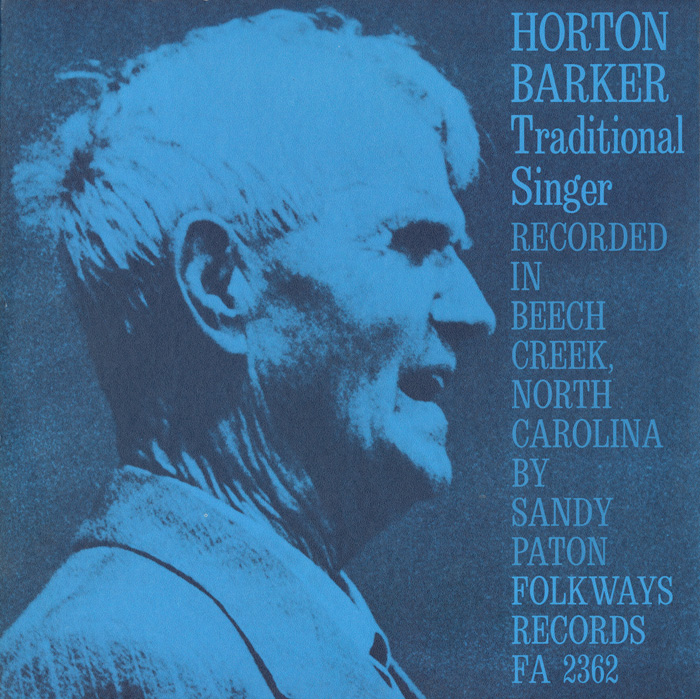

Appalachian music is the music of the region of Appalachia in the Eastern United States. It is derived from various European and African influences, including:
- English ballads
- Irish and Scottish traditional music
- fiddle music
- hymns
- African-American blues
- folk
- ballads
| Musician Name | Instrument |
|---|---|
| Don Reno | Banjo |
| Rob Ickes | Dobro |
| Jessie McReynolds | Mandolin |
| Missy Raines | Bass |
| Paul Warren | Fiddle |
| Maybelle Carter | Autoharp |
| James Allen Shelton | Guitar |
Horton Barker (August 23, 1889 – August 12, 1973)
Horton Barker was an Appalachian traditional singer. Barker was born in Laurel Bloomery, Tennessee, USA. Blind nearly all his life, Barker learned his unusually wide repertoire at the School for the Deaf and Blind in Staunton, Virginia, as well as at folk festivals in Whitetop, Virginia.
Barker's pure-toned tenor voice earned him a bare living around the region but also brought him to the attention of folklorist Alan Lomax, who recorded Barker in 1937, and later Folkways recording engineer Sandy Paton, who recorded Barker's 1961 LP Horton Barker: Traditional Singer.
At the age of 75, Barker appeared at the 1965 Newport Folk Festival in Rhode Island. A brief portion of the song "Pretty Sally" from Barker's Saturday performance at that festival is featured in the 1967 documentary film Festival, directed by Murray Lerner.
A partial list of performers at the 7th annual Newport Folk Festival in 1965
Thursday, July 22nd 1965:
- Joan Baez
- Maybelle Carter
Friday, July 23rd 1965:
- Mississippi John Hurt
- Sam & Kirk McGee & Arthur Smith
- Peter, Paul & Mary
- Pete Seeger
Saturday, July 24th 1965:
- Horton Barker
- Lightnin' Hopkins
- Bill Monroe & Blue Grass Boys
Sunday, July 25th 1965:
- Bob Dylan
- Peter, Paul & Mary
- Jean Ritchie
- Gordon Lightfoot
Horton Barker sings a song from his "Traditional Singer"album.
My interest in this pioneer of traditional music is heightened by the fact that Mr. Barker was a resident of my hometown, Chilhowie, Virginia. He was commonly seen and heard throughout the region singing his Appalachian folk and gospel songs.
My earliest memories of Mr. Barker date back to my elementary school days. I was captivated by this blind man's talent when Mrs. Pruner, my seventh grade teacher, played Horton Barker's album for the class.
Horton Barker died in 1973 at the age of 83 in Marion, Virginia.
The Newport Folk Festival is still popular today. The 1965 festival is historic because it was the first time Bob Dylan had performed using electrical instruments. Many at the festival were upset, thinking Dylan had abandoned his roots of traditional folk music.
Long before the Newport festival came into existence, music history was being made in a small town on the border of Tennessee and Virginia. The 1927 Bristol Sessions are considered to be a pivotal event contributing to the birth of Country Music.
Story of the Bristol Sessions
The music of 1927 is still popular today. Listen to a favorite recording as it sounded then and how it has been transformed today. Actor/Musician Steve Martin puts his talents to work on the classic "Sweet Heaven When I Die."